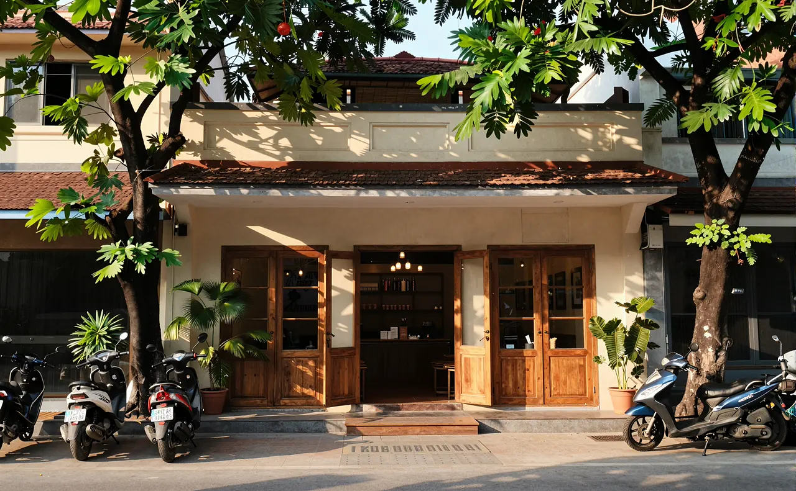

Website
Cách đưa doanh nghiệp lên Google Maps: đăng ký, xác minh và tối ưu Google Business Profile
Khách gõ "spa gần đây" hay "sửa máy lạnh quận 7" trên điện thoại, Google trả về một bản đồ với vài địa điểm trước cả các website. Muốn có mặt ở đó, doanh nghiệp cần một hồ sơ Google Business Profile được xác minh và chăm đúng cách. Bài này hướng dẫn từ lúc tạo hồ sơ đến khi nhận được khách từ bản đồ.

Muốn đưa doanh nghiệp lên Google Maps, bạn tạo một hồ sơ miễn phí trên Google Business Profile (trước đây gọi là Google My Business), điền đúng tên, danh mục, địa chỉ hoặc khu vực phục vụ, số điện thoại, giờ mở cửa, rồi xác minh quyền sở hữu theo cách Google yêu cầu. Sau khi được xác minh, hồ sơ có thể hiện trên Google Maps và trong khối bản đồ của kết quả tìm kiếm. Để hiện ở vị trí tốt, bạn cần chọn đúng danh mục, đăng ảnh thật, có đánh giá đều đặn từ khách thật, trả lời đánh giá và giữ thông tin khớp với website.
Bài này dành cho cửa hàng, phòng khám, spa, nhà hàng, xưởng dịch vụ và các doanh nghiệp có khách đến tận nơi hoặc phục vụ trong một khu vực. Nếu website của bạn còn chưa xuất hiện trên Google, hãy xem thêm bài website không lên Google, vì hồ sơ bản đồ và website hỗ trợ nhau.
Vì sao Google Maps quan trọng với doanh nghiệp địa phương
Khi một tìm kiếm mang ý định địa phương, như "nha khoa gần đây", "tiệm bánh kem Thủ Đức", "garage ô tô Long Biên", Google thường hiện một khối bản đồ kèm vài địa điểm, có số sao, giờ mở cửa, nút gọi và nút chỉ đường. Khách có thể gọi hoặc đi đến mà không cần vào website.
Theo trang trợ giúp của Google, thứ hạng trong kết quả địa phương dựa chủ yếu vào ba yếu tố: mức độ liên quan (hồ sơ khớp với điều khách tìm đến đâu), khoảng cách (từ vị trí khách hoặc địa điểm trong từ khóa) và mức độ nổi bật (doanh nghiệp được biết đến thế nào, gồm cả đánh giá, liên kết, bài viết về bạn). Bạn không đổi được khoảng cách, nhưng làm tốt được hai yếu tố còn lại.
Đăng ký hồ sơ Google Business Profile
Dùng một tài khoản Google thuộc về doanh nghiệp (nên là email công ty, không phải email cá nhân của nhân viên hay của người làm dịch vụ), vào trang Google Business Profile và làm theo các bước:
- Tìm trước xem doanh nghiệp đã có trên bản đồ chưa. Đôi khi khách hoặc Google đã tạo sẵn một địa điểm. Nếu có, hãy yêu cầu quyền sở hữu thay vì tạo hồ sơ mới, tránh trùng lặp.
- Nhập tên doanh nghiệp đúng như tên bạn dùng ngoài đời, trên biển hiệu và giấy tờ.
- Chọn danh mục chính. Trường này ảnh hưởng nhiều tới việc hồ sơ hiện cho những tìm kiếm nào. Chọn danh mục cụ thể nhất mô tả việc chính bạn làm, ví dụ "Phòng khám nha khoa" thay vì "Phòng khám".
- Địa chỉ hoặc khu vực phục vụ. Nếu khách đến cửa hàng, nhập địa chỉ và đặt ghim đúng cửa. Nếu bạn đến nhà khách (sửa điện nước, vệ sinh máy lạnh), có thể ẩn địa chỉ và khai báo khu vực phục vụ.
- Số điện thoại và website. Dùng số khách gọi được trong giờ làm việc, dẫn link về trang phù hợp nhất trên website.
- Xác minh theo hướng dẫn ở bước tiếp theo.
Xác minh hồ sơ: các cách thường gặp
Google tự chọn phương thức xác minh cho từng hồ sơ dựa trên ngành nghề, khu vực và thông tin hồ sơ; bạn không đổi được lựa chọn đó, nên không phải ai cũng thấy cùng phương thức. Theo trang trợ giúp của Google, các cách hiện có gồm: nhận mã qua cuộc gọi hoặc tin nhắn, nhận mã qua email, quay video ghi hình, gọi video trực tiếp với nhân viên hỗ trợ (chỉ trong giờ mở cửa của doanh nghiệp) và nhận mã qua bưu thiếp gửi đến địa chỉ. Trong một số trường hợp, hồ sơ có thể được xác minh ngay nếu website đã được xác minh trong Google Search Console.
Với cách quay video, hãy chuẩn bị trước để quay một lần là đạt: cảnh bên ngoài có biển hiệu và con đường xung quanh để chứng minh vị trí, cảnh bên trong cho thấy dụng cụ làm nghề hoặc hàng hóa, và bằng chứng bạn có quyền quản lý như mở khóa cửa, khu vực chỉ nhân viên vào được, hoặc giấy tờ kinh doanh. Doanh nghiệp không có cửa hàng có thể quay xe dịch vụ, dụng cụ, trang phục có tên thương hiệu. Sau khi gửi, Google thường xét duyệt trong vài ngày làm việc; hồ sơ có thể bị yêu cầu bổ sung nếu video chưa rõ.
Lưu ý về địa chỉ: Google yêu cầu địa chỉ là nơi bạn thực sự tiếp khách hoặc làm việc trong giờ mở cửa. Văn phòng ảo, hộp thư thuê hay địa chỉ nhờ người quen dễ bị từ chối hoặc tạm ngưng sau này.
Tối ưu hồ sơ sau khi xác minh
Thông tin cơ bản đầy đủ và chính xác
- Giờ mở cửa, kể cả giờ đặc biệt dịp Tết, lễ. Khách đến nơi thấy đóng cửa sẽ để lại đánh giá xấu.
- Danh mục phụ: thêm những danh mục đúng với dịch vụ phụ, không thêm cho có.
- Mô tả doanh nghiệp: vài câu nói rõ bạn làm gì, cho ai, ở đâu, điểm khác biệt. Viết tự nhiên, không nhồi từ khóa.
- Dịch vụ hoặc sản phẩm: liệt kê các dịch vụ chính, có thể kèm giá tham khảo nếu ngành cho phép.
- Thuộc tính: chỗ đậu xe, nhận thanh toán thẻ, có wifi, lối đi cho xe lăn, tùy những gì Google gợi ý cho danh mục của bạn.
Ảnh thật, cập nhật đều
Đăng ảnh mặt tiền để khách nhận ra khi đến, ảnh bên trong, ảnh đội ngũ đang làm việc, ảnh sản phẩm hoặc món ăn thật. Ảnh chụp bằng điện thoại đủ sáng vẫn tốt hơn ảnh mẫu tải trên mạng. Thêm ảnh mới mỗi tháng để hồ sơ trông đang hoạt động.
Bài đăng cập nhật
Google Business Profile cho phép đăng bài ngắn về ưu đãi, sự kiện, sản phẩm mới. Bài đăng không thay được đánh giá hay danh mục, nhưng cho khách thấy doanh nghiệp còn hoạt động và có thêm lý do bấm vào.
Đừng nhồi từ khóa vào tên
Đổi tên hồ sơ từ "Nha khoa An Bình" thành "Nha khoa An Bình, niềng răng, trồng răng implant giá rẻ quận 3" là vi phạm hướng dẫn của Google và dễ khiến hồ sơ bị tạm ngưng. Tên hồ sơ phải giống tên thật của doanh nghiệp.
Đánh giá: xin thế nào và trả lời ra sao
Số lượng, độ mới và nội dung đánh giá ảnh hưởng tới cả thứ hạng lẫn quyết định của khách. Cách làm bền vững là xin đánh giá từ khách thật, đều đặn, ngay sau khi họ dùng dịch vụ:
- Lấy đường dẫn xin đánh giá trong trang quản lý hồ sơ, gửi qua Zalo hoặc in mã QR đặt ở quầy thanh toán.
- Xin đúng lúc: khi khách vừa khen, vừa nhận hàng, vừa hoàn tất buổi điều trị. Câu xin nên ngắn, lịch sự, không ép.
- Không đổi quà lấy đánh giá, không mua đánh giá, không nhờ nhân viên tự viết. Chính sách của Google cấm đánh giá giả, đánh giá được trả tiền và đánh giá đổi lấy ưu đãi như giảm giá, quà tặng; các đánh giá này sẽ bị gỡ và hồ sơ có thể bị hạn chế.
- Không chỉ xin khách vui: lọc trước khách hài lòng rồi mới gửi link (thường gọi là review gating), hay ngăn khách để lại đánh giá xấu, đều bị chính sách của Google cấm. Hãy gửi cùng một lời mời cho mọi khách.
Hãy trả lời mọi đánh giá, kể cả đánh giá năm sao. Với đánh giá tiêu cực, trả lời bình tĩnh, nhận phần lỗi nếu có, đưa cách liên hệ để giải quyết riêng. Người đọc đánh giá sau này nhìn cách bạn trả lời nhiều hơn là nhìn một đánh giá xấu. Bạn không tự xóa được đánh giá của khách; chỉ có thể báo cáo những đánh giá vi phạm chính sách, như spam, nội dung xúc phạm, đánh giá từ người không phải khách.
Liên kết hồ sơ với website
Hồ sơ bản đồ và website củng cố nhau. Những việc nên làm trên website:
- Tên, địa chỉ, số điện thoại khớp từng chữ với hồ sơ Google, ở chân trang và trang Liên hệ. Thông tin lệch nhau giữa các nơi khiến Google kém tin.
- Nhúng bản đồ ở trang Liên hệ, kèm hướng dẫn đường đi, chỗ gửi xe.
- Dữ liệu có cấu trúc LocalBusiness khai báo tên, địa chỉ, giờ mở cửa, để máy tìm kiếm đọc chính xác.
- Trang riêng cho từng chi nhánh nếu có nhiều địa điểm, mỗi chi nhánh một hồ sơ Google riêng dẫn về đúng trang của chi nhánh đó.
- Gắn tham số UTM vào link website trong hồ sơ để thấy trong Google Analytics bao nhiêu khách đến từ Google Maps.
Theo dõi hiệu quả
Trong trang quản lý hồ sơ có phần hiệu suất, cho biết số lượt xem hồ sơ, số cuộc gọi, số lượt bấm chỉ đường và bấm vào website, cùng các cụm từ khách đã tìm để thấy bạn. Hãy xem mỗi tháng một lần: cụm từ khách tìm cho biết nên viết thêm gì ở mô tả và website; lượt gọi và chỉ đường là con số gần với doanh thu nhất.
Sai lầm thường gặp
- Hồ sơ tạo bằng email của nhân viên đã nghỉ hoặc của bên làm dịch vụ: đến lúc cần sửa thì không ai có quyền. Luôn thêm tài khoản doanh nghiệp làm chủ sở hữu chính.
- Tạo nhiều hồ sơ cho cùng một địa điểm để chiếm chỗ trên bản đồ. Google gộp hoặc gỡ các hồ sơ trùng.
- Đổi địa chỉ, đổi tên liên tục: mỗi lần sửa lớn có thể phải xác minh lại.
- Để mặc đánh giá xấu không trả lời trong nhiều tháng.
- Giờ mở cửa sai dịp lễ, số điện thoại không ai nghe.
- Mua đánh giá hàng loạt: rủi ro bị gỡ đánh giá và mất uy tín khi khách nhận ra.
Chi phí và website đi kèm tại Dream Labs
Tạo và duy trì Google Business Profile là miễn phí; chi phí thật nằm ở thời gian chụp ảnh, xin đánh giá và trả lời khách. Phần đáng đầu tư là website mà hồ sơ dẫn về: trang dịch vụ rõ ràng, trang Liên hệ có bản đồ, thông tin khớp với hồ sơ, tải nhanh trên điện thoại. Khi làm website mới với Dream Labs, hãy gửi kèm thông tin hồ sơ Google hiện có để tên, địa chỉ, số điện thoại trên website khớp nhau ngay từ đầu.
Gói Cơ bản 8.000.000đ gồm 5 trang, form liên hệ, nút Zalo và SEO cơ bản, đủ cho một cửa hàng một địa điểm. Gói Chuyên nghiệp 18.000.000đ thiết kế riêng, có blog để viết bài về dịch vụ theo khu vực. Gói Cao cấp Liên hệ hợp chuỗi nhiều chi nhánh, đa ngôn ngữ cho khách du lịch.
| Gói | Giá | Thời gian | Bao gồm |
|---|---|---|---|
| Cơ bản | 8.000.000đ | 7–10 ngày4 vòng sửa | Có mặt chuyên nghiệp trên Google và điện thoại trong khoảng 10 ngày, khách tìm thấy và liên hệ được ngay.
|
| Chuyên nghiệpPhổ biến nhất | 18.000.000đ | 14–21 ngày9 vòng sửa | Website riêng đúng tầm thương hiệu, tự đăng bài để có khách từ Google lâu dài, không phụ thuộc người làm.
|
| Cao cấp | Liên hệ | 30–45 ngàyKhông giới hạn trong phạm vi | Trải nghiệm đủ khác biệt để định vị cao cấp, bán hàng và tiếp khách trực tuyến, phục vụ cả khách nước ngoài.
|
Xem thêm trang dịch vụ thiết kế website, so sánh các gói ở bảng giá. Bài quản trị website sau bàn giao có lịch kiểm tra Search Console và GA4 nên làm song song với hồ sơ bản đồ. Gửi tên doanh nghiệp qua Zalo 0934 246 420 để được xem giúp.
Câu hỏi thường gặp
Đưa doanh nghiệp lên Google Maps có mất phí không?
Không. Tạo, xác minh và cập nhật Google Business Profile đều miễn phí. Bạn chỉ trả tiền nếu muốn chạy quảng cáo Google Ads hiển thị trên bản đồ.
Xác minh Google Business Profile mất bao lâu?
Tùy phương thức Google đưa ra. Mã qua điện thoại hoặc email có thể xong ngay, video thường được xét trong vài ngày, bưu thiếp lâu hơn. Hồ sơ có thể bị yêu cầu bổ sung nếu bằng chứng chưa rõ.
Không có cửa hàng thì có lên Google Maps được không?
Được, nếu bạn phục vụ khách tại nhà hoặc trong một khu vực. Khi tạo hồ sơ, ẩn địa chỉ và khai báo khu vực phục vụ. Văn phòng ảo hay địa chỉ không tiếp khách thì không nên dùng.
Làm sao xóa đánh giá xấu trên Google Maps?
Chủ hồ sơ không tự xóa được đánh giá. Bạn có thể báo cáo đánh giá vi phạm chính sách như spam, xúc phạm, không phải khách thật. Với đánh giá thật, hãy trả lời lịch sự và giải quyết vấn đề.
Có nên tặng quà để khách đánh giá năm sao không?
Không. Chính sách của Google cấm đánh giá đổi lấy ưu đãi, kể cả giảm giá hay quà nhỏ. Hãy xin đánh giá từ mọi khách thật, đúng lúc, bằng đường dẫn hoặc mã QR, không chọn lọc chỉ khách hài lòng.
Nhiều chi nhánh thì làm mấy hồ sơ?
Mỗi địa điểm có khách đến là một hồ sơ riêng, dẫn về trang của đúng chi nhánh đó trên website. Không tạo nhiều hồ sơ cho cùng một địa chỉ.
Có website rồi có cần Google Business Profile không?
Nên có, nếu bạn có khách ở một khu vực cụ thể. Website giúp xếp hạng trong kết quả thường, còn hồ sơ giúp hiện trên bản đồ và khối địa phương, nơi khách gọi hoặc chỉ đường ngay.
Nguồn ảnh: ảnh minh họa do Dream Labs tạo bằng AI (ComfyUI · Z-Image Turbo), không phải ảnh chụp khách hàng hay dự án thật.
Bắt đầu cùng Dream Labs
Muốn khách tìm thấy cửa hàng của bạn trên Google?
Nhắn Zalo cho Dream Labs tên doanh nghiệp, khu vực và website hiện tại. Chúng tôi xem giúp hồ sơ Google và website đã khớp nhau chưa, cần bổ sung gì.